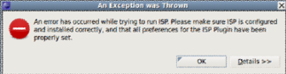
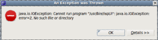

|
|
Troubleshooting |
This section addresses the most common issues encountered when using the ISP Plug-in for Eclipse. If you encounter something that is not not mentioned here, please email your problem to isp-dev@cs.utah.edu. We will get back to you with a solution as soon as possible.
| Problem | Solution |
|---|---|
| When I try to run ISP, the ISP Console reports No such file or directory. | Make sure the paths to the ISP executable and other scripts are properly set on the ISP preference page |
| When I try to run ISP, I get an error message saying that an error occurred while trying to run ISP. | If the error details say: “Cannot run program ISPCC” Then ISP was not installed properly. Try re-installing ISP itself. |
|   |
You most likely have not set the paths to the ISP executable or one of its scripts properly in the preference page. Make sure you don't have a trailing "/" on any path. (e.g. /usr/local/bin/) Just use the browse buttons on the ISP preference page to safely navigate to the directory. |
| I don’t see ISP in the menu, there is no trident icon anywhere, and the ISP Views do not exist. | The Eclipse Plug-in was not installed properly. Try installing it again from http://eclipse.org/ptp/isp. |
| While running ISP from the command line I get an error saying “Server unable to bind!” | This means the specified port is in use. By default ISP starts at port 9999. Use the –p flag to specify a different port number. Those using the Eclipse plugin do not need to worry about this problem. If port 9999 fails to bind the plugin will search until it finds a port that is usable (leaving port numbers < 1025 available to the system). |
| I’m running Eclipse and when I try to running ISP, Eclipse becomes unresponsive. | Make sure your process manager is running. The ISP Plug-in assumes your process manager is already running |
| I’m trying to view a log file in the Eclipse editor, and I get editor message saying that the file is out of sync with the file system. | ISP has generates a new log file. Just hit F5 to refresh the Eclipse editor's view of the file. |
| I can't find the log file ISP generated in my project. | Refresh your project. It should be in a directory named "isp" at the same level as the source file. |
Back to Top | Back to Table of Contents
School of Computing * 50 S. Central Campus Dr. Rm. 3190 * Salt Lake City, UT
84112 * isp-dev@cs.utah.edu
License